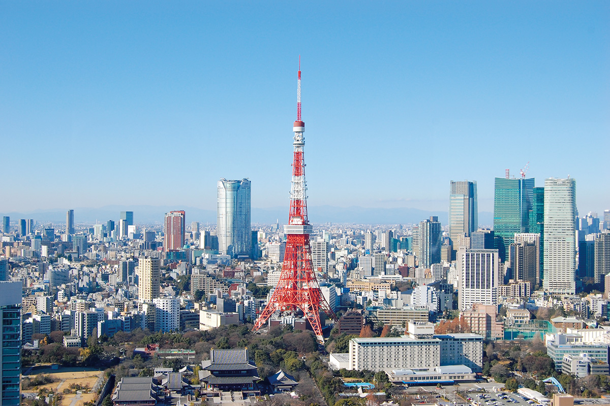
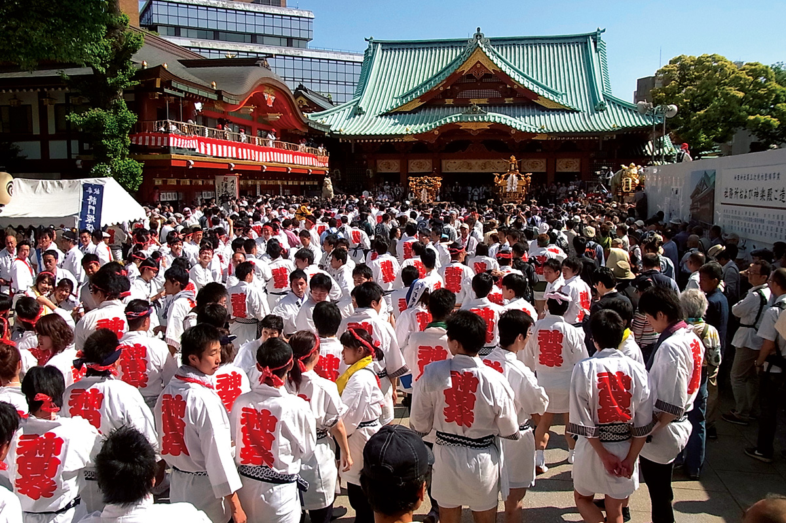
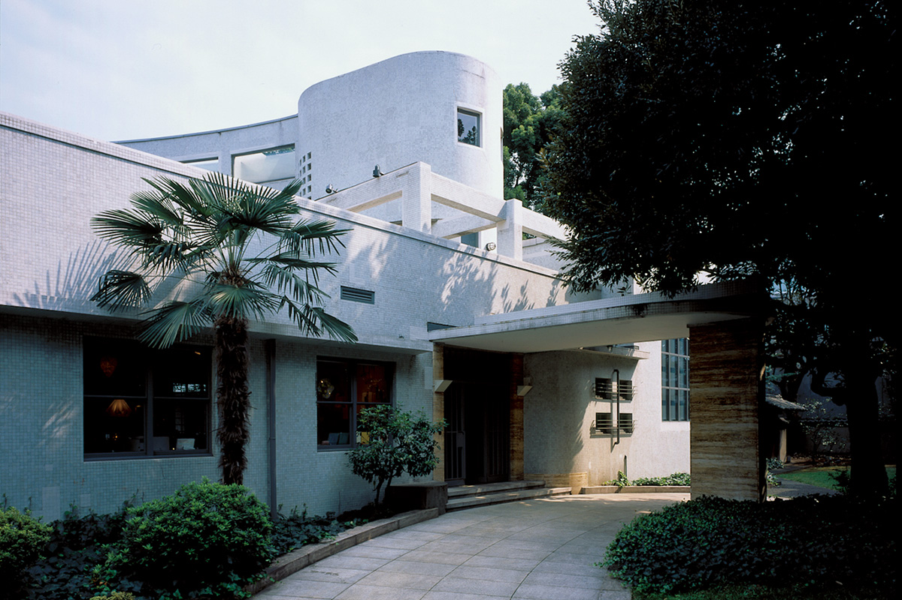
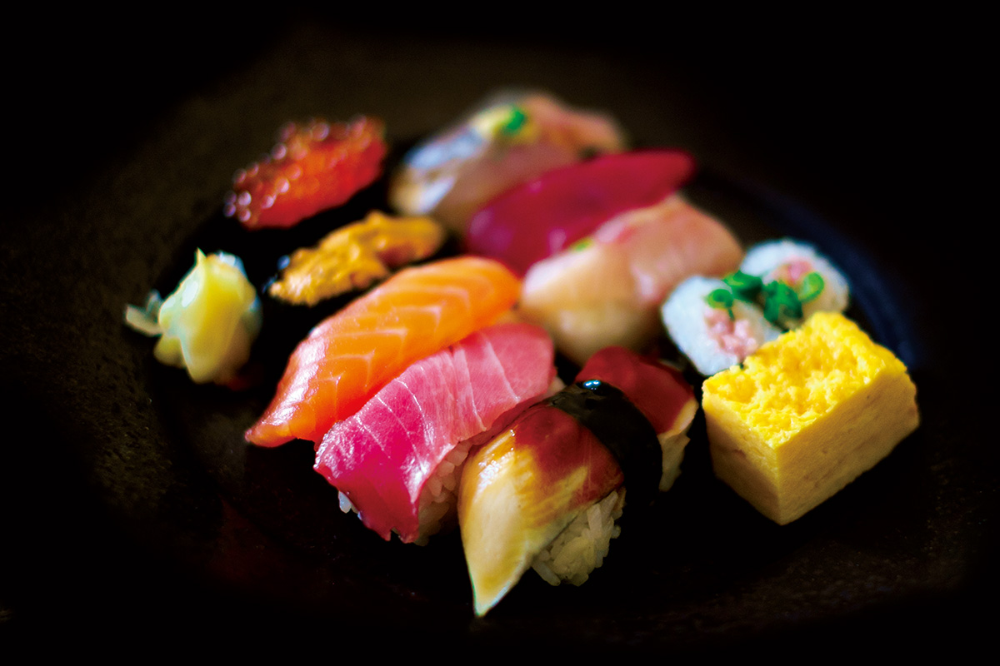
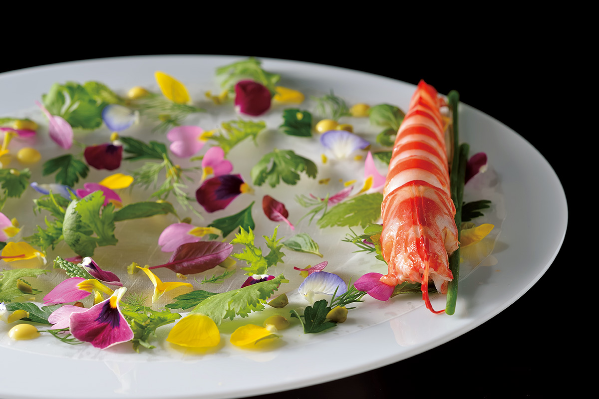
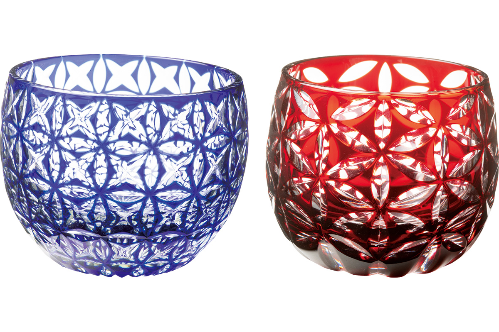
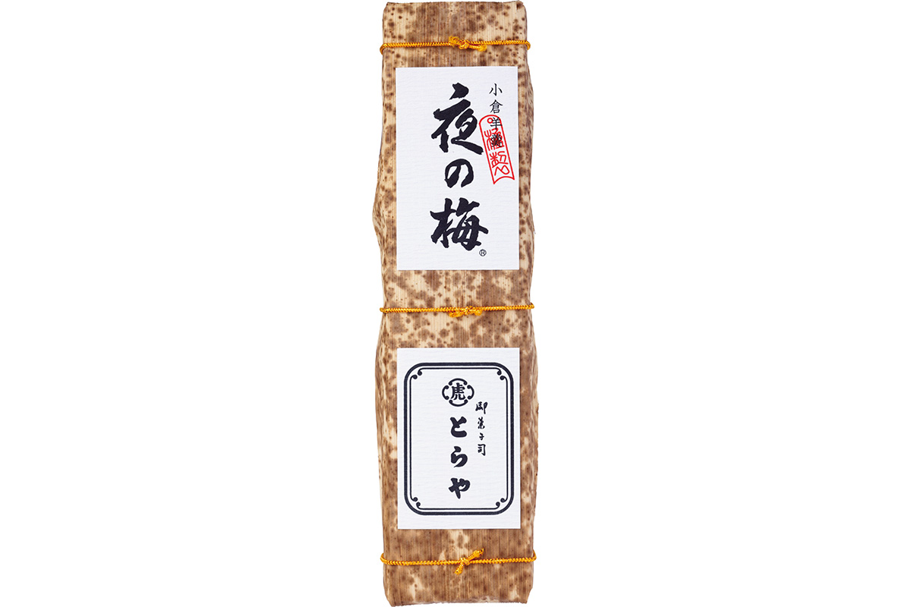
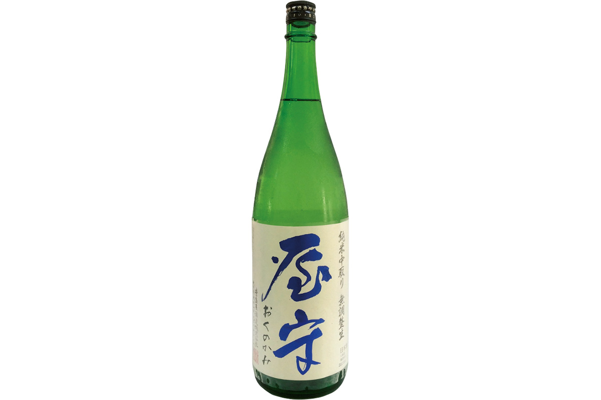
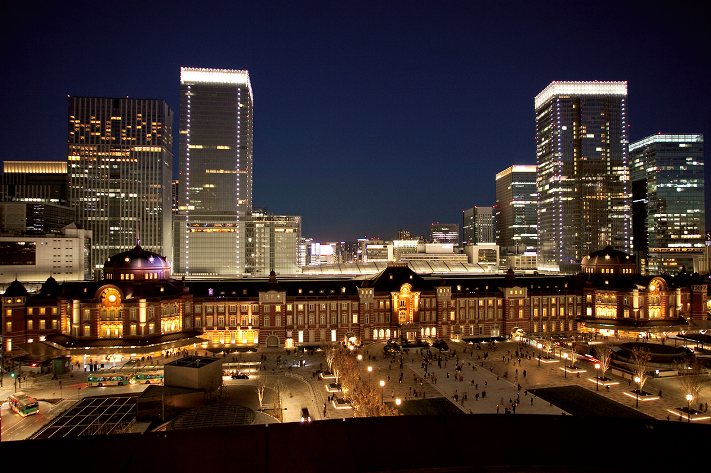

Префектура Токио
Токио: башня, старый вокзал и суши у прилавка

Красно-белая башня Токио поднимается над городом: вокруг неё на километры тянутся кварталы, а впереди видны крыши старого храма.
Город, где старый храм стоит между небоскрёбов, где вокзал стал гостиницей, а суши нигири придумали именно здесь. Рассказываем, за чем ехать в Токио.
Карта: 111 мест из 62 статей · все статьи о Токио
Карта
Токио на карте
111 мест из наших статей о Токио: Асакуса и Сумида, музеи Уэно и Янаки, Маруноути, Нихонбаси и Гиндза, рынки Цукидзи и Тоёсу, Аояма и Роппонги, Сибуя и Сэтагая, Сибамата, гора Такао и Окутама. Острова Идзу и Огасавара южнее: уменьшите карту. Нажмите на точку, чтобы открыть статью.
Пунктирный круг означает, что точка примерная: место находится в этом районе или на этом острове.
О префектуре
Город, который четыре века назад назывался Эдо
Токио делится на три части: 23 особых района, район Тама на западе с 26 городами, пятью посёлками и восемью деревнями, и островные территории, то есть острова Идзу и архипелаг Огасавара в океане. Это столица страны и один из крупнейших городов мира.
Столичная история начинается в 1603 году, когда Токугава Иэясу (1543–1616), первый сёгун династии Токугава, основал здесь сёгунат Эдо: сёгунат это военное правительство, которое почти три века управляло страной от имени императора. Город Эдо, названный по имени правительства, стал центром политики и культуры и быстро разросся; порядок сохранялся до 1867 года, когда власть вернули императору. В 1868 году замок Эдо передали императорскому дому, переименовали в Токийский замок, и он стал дворцом. После отмены княжеств появилась префектура Токио, а в 1943 году префектура и город Токио объединились в мегаполис Токио.
Символический знак города принят в 1989 году: это первая буква названия города в центре и три одинаковые дуги зелёного цвета, которые говорят о движении, расцвете и покое.
Что посмотреть
Башня, с которой видно весь город
Телевизионная башня Токио
Башня высотой 333 метра построена как антенна для теле- и радиовещания. На отметках 150 и 250 метров есть смотровые площадки, откуда город видно на все четыре стороны сразу. Внизу работает «Футтаун» с магазинами и кафе.
- Адрес
- 4-2-8 Shibakoen, Minato, Tokyo
- Телефон
- +81 3-3433-5111
Праздники
Праздник, который бывает раз в два года
Канда-мацури
Это один из трёх главных праздников Японии. В главный год по улицам идёт большое шествие синко-сай, то есть вынос божества из храма, а потом начинается микоси-мияири: около двухсот больших и малых микоси, переносных святилищ с божеством внутри, проносят по кварталам, и любой желающий может взяться за шест и помочь их нести.

- Период
- раз в два года, середина мая
- Место
- святилище Канда-Мёдзин, 2-16-2 Sotokanda, Chiyoda, Tokyo
Другие праздники
- Праздник Санно, летний праздник святилища Хиэ
- Праздник Сандзя в Асакусе, шествие с микоси по кварталам старого города
- Фейерверк на реке Сумида, большой летний фейерверк над водой
Музеи и архитектура
Особняк, который стал музеем современного искусства
Музей Хара
Здание построили в 1938 году как дом промышленника, а позже переделали в музей современного искусства. Внутри сохранилась необычная планировка с плавными дугами, так что сам дом стал частью экспозиции. Музей работал до января 2021 года.

- Адрес
- 4-7-25 Kitashinagawa, Shinagawa, Tokyo
- Телефон
- +81 3-3445-0651
- Сайт
- haramuseum.or.jp
Что ещё посмотреть
- Музей искусств «Тэйэн», музей в бывшем дворце принца, с садом
- Национальный музей западного искусства, собрание европейской живописи в парке Уэно
- Храм Цукидзи-Хонгандзи, храм с необычным индийским куполом
Местная кухня
Суши, которые придумали в Эдо
Эдомаэ-дзуси
Именно в Эдо, то есть в нынешнем Токио, появились суши нигири: рыбу перед подачей подсаливают, маринуют в уксусе или соевом соусе, а рис заправляют уксусом. Так рождается вкус, где каждый кусочек собран из двух частей: рыбы и риса, и съесть его нужно сразу, пока рис не остыл.

Что ещё попробовать
- Тянко-набэ, густой набэ, то есть блюдо, которое варят в одном горшке за столом, с мясом, рыбой и овощами
- Фукагава-дон, рис с моллюсками и зеленью
- Мондзя-яки, жидкая лепёшка из капусты и муки, которую жарят на решётке прямо за столом
Где поесть
Ресторан, где ужин собирают заново
Ресторан Такасава
Шеф переосмысляет японские продукты и традиции и подаёт авторские блюда: меню здесь строится вокруг одного сюжета, а не вокруг набора привычных перемен. Шеф ещё и старший сомелье, поэтому вино подбирают сами хозяева. Столики только по предварительной записи.

- Адрес
- 3-5-2 Akasaka, Minato, Tokyo, 2F Sanyo Akasaka Bldg
- Телефон
- +81 3-3505-5052
- Время работы
- с 18:00, последний заказ в 21:00
- Выходные
- воскресенье и праздники
- Сайт
- takazawa-y.co.jp
Ремёсла
Стакан, гранёный вручную
Стаканы эдо-кирико из магазина Касё
Эдо-кирико это стеклянные изделия с гранёным узором: мастер снимает фаски по трафарету, поэтому рисунок ловит свет изнутри и стакан играет даже при свече. В магазине Касё кроме традиционных узоров делают свои, более тонкие, и полируют грань вручную.

- Справки
- магазин Касё, главная лавка в Камэйдо
- Телефон
- +81 3-3682-2321
- Сайт
- edokiriko.co.jp
Что привезти
Мармелад из бобов и сакэ без фильтрации
Ёкан «Слива в ночи»
Это ёкан, то есть плотный желеобразный мармелад из бобовой пасты, главная сладость старого дома Торая. Массу готовят из красных бобов адзуки с кусочками бобов, а название «слива в ночи» пришло из вида среза: кусочки бобов в тёмном желе и правда похожи на цветы сливы в темноте. Одна длинная форма стоит 3024 иены.

- Телефон
- +81 120-45-4121
Сакэ «Оку-но-ками»
Воду для закваски здесь поднимают из-под земли: она из подземных потоков горы Фудзи. Сакэ разливают без фильтрации и без добавления воды, поэтому вкус получается плотным и чистым. Бутылка 720 миллилитров стоит 1606 иен.

- Телефон
- +81 42-391-0601
Где остановиться
Отель, который встроили в старый вокзал
Отель «Токийский вокзал»
Гостиница занимает часть исторического здания вокзала Токио со стороны Маруноути: красный кирпич, высокие потолки, люстры. Отсюда удобно выходить к поездам, а вид из окон на площадь и город стоит отдельного вечера.

- Адрес
- 1-9-1 Marunouchi, Chiyoda, Tokyo
- Телефон
- +81 3-5220-1111
- Комнат
- 150
- Цена
- от 42 262 иен за ночь за номер, налоги и обслуживание включены, городской сбор не включён
Местный диалект
Как здесь говорят «очень вкусно»
- фунтоо ни умээ караочень вкусно
- сидээ котон, наттиматта ёслучилось что-то ужасное
- бэраммэ, нани иттэя гандабалбес, что ты говоришь
Рекорды
В чём Токио первый
- №1 национальные сокровища: первое место по числу
- №2 парки: первое место по числу
- №3 городская агломерация: крупнейшая в мире по населению
Вопросы и ответы
Что ещё спрашивают о Токио
Как зовут собаку рядом с памятником Сайго Такамори в парке Уэно?
Цун. Сайго Такамори (1828–1877), полководец и один из руководителей переворота 1868 года, был известен любовью к собакам, и скульптура изображает его выходящим на охоту с собакой. В жизни Цун была самкой сацумской породы, но на памятнике это самец, и делал его другой скульптор, не тот, кто отлил самого Сайго.
Сколько островов у Токио?
Одиннадцать. Это острова Идзу, а именно Осима, Тосима, Ниидзима, Сикинедзима, Кодзусима, Миякэдзима, Микурадзима, Хатидзёдзима и Аогасима, и два острова архипелага Огасавара: Титидзима и Хисима. Вокруг дикая природа, и на каждом острове своя культура.
Справочник
Токио в цифрах
| Центр префектуры | район Синдзюку |
| Города и посёлки | 23 района, 26 городов, 5 посёлков, 8 деревень |
| Площадь | 2194 кв. км |
| Население | 13,82 миллиона человек |
| Плотность населения | 6300,0 человека на кв. км |
| Туристов за год | 265,39 миллиона |
| Дерево префектуры | гинкго |
| Цветок префектуры | сакура сорта сомэй-ёсино |
| Птица префектуры | чайка юрикамомэ |
| Средняя температура | +16,8 |
| Максимум | +32,7 |
| Минимум | +0,6 |
| Осадки | 1446 мм |
| Ясных дней | 34 |
| Дождливых дней | 103 |
| Снежных дней | 11 |
| Онсэнов | 21 |
| Гостиниц и рёканов | 2435 |
| Музеев искусств | 86 |
| Музеев | 186 |
| Митиноэки, придорожных станций | 1 |
| Национальных сокровищ | зал Дзидзо-до храма Сёфукудзи и другие, всего 281 |
| Важных культурных ценностей | 2806 |
| Исторических мест | 48 |
| Природных памятников | 15 |
| Всемирное наследие | постройки Ле Корбюзье и архипелаг Огасавара |
| Национальные парки | Титибу-Тама-Кай, Огасавара, Фудзи-Хаконэ-Идзу и другие, всего 4 |
Природные памятники
- Мегро, редкая певчая птица, которая живёт только на одном острове
- Бывшая императорская усадьба Сироканэ, парк с сохранившимся лесом
- Остров Тори-сима, вулканический остров, где гнездятся морские птицы
- Альбатрос, большая морская птица, которую здесь охраняют
- Аллея кедров у ворот Баба, старая аллея перед святилищем
- Скала Кобэ, скальное обнажение в ущелье
Наши статьи
Все статьи о Токио
Асакуса и Сумида
- Храм Сэнсо-дзи: «универмаг» благословений в Асакусе
- Сандзя мацури: три майских дня, когда Асакуса несёт сотню паланкинов
- «Дозэу Хираи»: вьюны в маленьком котелке и сакэ по-эдоски
- Музей Хокусая в Сумиде: художник у себя дома, в зеркальном здании Кадзуё Сэдзимы
- Koganeyu: старая баня Кинситё с сауной, пивом и фреской во всю стену
- Кошки и лисы у реки Сумида: святилища Имадо и Мимэгури
- Yagenbori в Асакусе: семь специй, которые когда-то оценил сёгун
- «Ядороку» в Асакусе: старейшая онигири-лавка Токио и её рисовые шарики с 1954 года
- «Сакура-набэ Накаэ»: котелок с кониной из старого квартала Ёсивара
- Spice Cafe и HOPPERS: шри-ланкийские карри из японских продуктов сезона
- Музей Эдо-Токио после ремонта: театр в натуральную величину, тесные дома и летние хитрости старого города
- Фейерверк на реке Сумида: двадцать тысяч залпов над летним Токио
Уэно, Янака, Юсима
- Токийский национальный музей в Уэно: шесть зданий, 89 национальных сокровищ и сад с чайными домиками
- Национальный музей природы и науки в Уэно: от китов и динозавров до японских метеоритов
- Национальный музей западного искусства в Уэно: здание Ле Корбюзье, коллекция Мацукаты и «Кувшинки» Моне
- Сад и особняк Ивасаки: дом главы «Мицубиси» работы Джозайи Кондера
- Музей скульптуры Асакуры в Янаке: дом и мастерская, которые скульптор построил для себя
- Hanaju в Янаке: цветочная лавка 1870 года и кафе в старых деревянных домах
- «Синсукэ» в Юсиме: старая идзакая и умение пить сакэ по-эдоски
Маруноути, Нихонбаси, Гиндза, Тоёсу
- The Tokyo Station Hotel: ночь внутри краснокирпичного вокзала
- HOSHINOYA Tokyo: рёкан-башня среди офисов Отэмати с онсэном на крыше
- Нихонбаси пешком: от нулевого километра пяти трактов до святилища с кошками
- «Канда Мацуя»: соба, сакэ с полудня и закуски по-эдоски
- «Куя» в Гиндзе: монака, которую ел Сосэки и которую раскупают заранее
- Fufu Токио Гиндза: онсэн из Атами в каждом номере над главной улицей Гиндзы
- Внешний рынок Цукидзи: за тунцом, кацуобуси и комбу вместе со знатоком рыбы
- Palace Hotel Tokyo: день с видом на лес у Императорского дворца
- Кафе в Мэйдзи Сэймэй-кан: кофе под кессонным потолком 1934 года у рва Императорского дворца
- Музей Мицуи: чайные чаши и ширма Окё в здании, которое само охраняется государством
- Haibara в Нихонбаси: лавка японской бумаги, которой больше двухсот лет
- Star Bar Ginza: Хисаси Киси и лёд, который исчезает в бокале
- «Хатимаки Окада»: кухня старого Эдо в Гиндзе с 1916 года
- Завтрак на рынке Тоёсу: четыре заведения, куда ходят сами работники рынка
Акасака, Роппонги, Аояма
- TORAYA в Акасаке: пятьсот лет ёкана, от императорского двора до Парижа
- Музей Мори в Роппонги: современное искусство на 53-м этаже башни Мори
- Музей Нэдзу: древнее искусство Азии и сад посреди Минами-Аоямы
- The Okura Tokyo: знаменитое лобби вернулось в новый отель
- Санно мацури: шествие в придворных одеждах среди небоскрёбов Токио
- Национальный центр искусств в Роппонги: музей без коллекции под стеклянной волной Кисё Курокавы
- Музей Сантори в Роппонги: красота вещей, которыми жили
- Florilège в Адзабудай Хиллз: французская кухня, где главное блюдо из овощей
Сибуя, Мэгуро, Сэтагая
- Музей Нихон Мингэйкан и дом Мунэёси Янаги: красота вещей, которыми пользуются
- Shibuya SAUNAS: девять саун и два холодных бассейна в Сибуе
- BONUS TRACK: улица маленьких лавок в Симокитадзаве, где знаешь хозяина в лицо
- Голубой особняк Тэодоры Одзаки: дом эпохи Мэйдзи, который спасли мангаки
- «Лион» в Сибуе: кафе классической музыки, где с 1926 года слушают пластинки
- TRUNK(HOTEL) в Сибуе: отель, где ночлег становится маленьким вкладом в общее дело
- Hotel Gajoen Tokyo: отель-музей в Мэгуро, где собрано 2500 произведений японского искусства
- YUEN BETTEI DAITA: рёкан с онсэном из Хаконэ в минуте от станции Сэтагая-Дайта
Сибамата и Тосима
Запад Токио
- Дом Кунио Маэкавы: как архитектор построил себе модернистский дом в военное время
- Гора Такао весной: тысяча сакур на хребте, музей о горе и обед у очага
- VERTERE в Окутаме: крафтовое пиво в старом доме над горной рекой
- Maruta в Тёфу: ресторан, где всё готовят на дровах из того, что растёт рядом
- «Сидзэндзин-мура» в Акируно: бочковая сауна, горная речка и крошечные дома в полутора часах от центра Токио
- SORANO HOTEL: курорт с бассейном над парком в сорока минутах от вокзала Токио
Острова
- Кодзусима: остров, где боги делили воду, а золотоглазого окуня едят запросто
- Хатидзёдзима: золотой цвет острова, до которого от Токио меньше часа лёту
- Титидзима и Огасавара: острова, которые никогда не касались материка
- Миякэдзима: вулканический остров, куда из Токио летят на маленьком самолёте
- Ниидзима: дом на колёсах в лесу, грядки и звёзды над открытой ванной